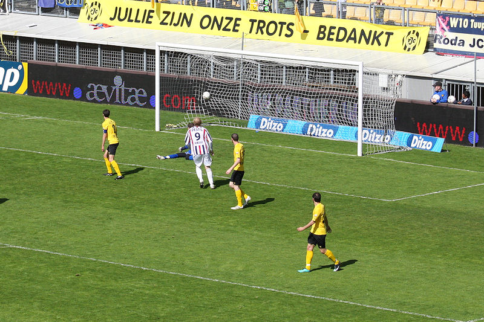
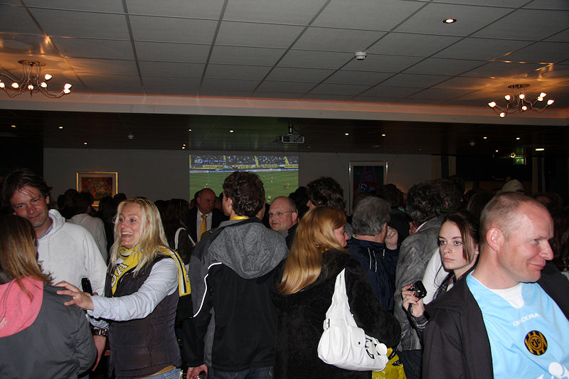

Achmed en Mahmud, twee nieuwe Roda-supporters ;-)
Mooi doek op Oost.
West-side.
De Fauw in duel met Demouge.
Junker laat de bal lopen voor Bodor die binnen schiet: 1-0, (33').
In de tweede helft ontsnapt Roda aan een gelijkmaker wanneer een schot van
Demouge in eerste instantie gekeerd wordt door Tyton...
In de rebound stuit een schot van Van der Heijden op De Fauw.
Na een overtreding binnen de zestien op Junker verzilvert de Deen
persoonlijk de toegekende strafschop: 2-0, (51').
De potentiële tegenstanders van Willem II, volgend seizoen. De gast met
"Haarlem" volgt het nieuws niet, kennelijk ;-)
Knappe redding Aerts.
Wat gebeurt er als je 100% kansen mist...

... precies! Invaller Pereira straft knullig verdedigen af: 2-1, (69").
Nogmaals, wat gebeurt er als je 100% kansen mist...
... en nogmaals 100% kansen...
... precies, 2-2, door Boutahar op aangeven van Pereira, (74').

Schot van De Fauw.
Treffer! Een belangrijk doelpunt dat Roda in de play-offs brengt, (88').

Blij, blij, blij...
De eerste tegenstander in de play-offs is Heracles.
Er waren veel toeschouwers bij deze wedstrijd. Roda leeft!

De after-party.
Gezellig druk.

Naderende regenbuien dreigen het feestje te verstoren.
Nja, who cares ;-)
Schuilen onder pappa's jas.
Deze actie wordt u aangeboden door Flexpoint.
Wie zeurt er nu over hoofddoekjes in dit land...
Und ich flieg, flieg...
Feuer frei.
De Kickoff was gesloten maar wie goed keek kon enkele spelers ontwaren. Hier
vlucht Staelens voor de regen.

In de Herjod was het heerlijk nagenieten van de wedstrijden. De vreugde om
het bereiken van de play-offs was even groot als de vreugde dat
Ajax NIET kampioen was geworden.
Saeijs heeft zijn biertje verdiend.
Buiten gaat het feest gewoon door.
Twee sjoone maedjes en ein paraplu.